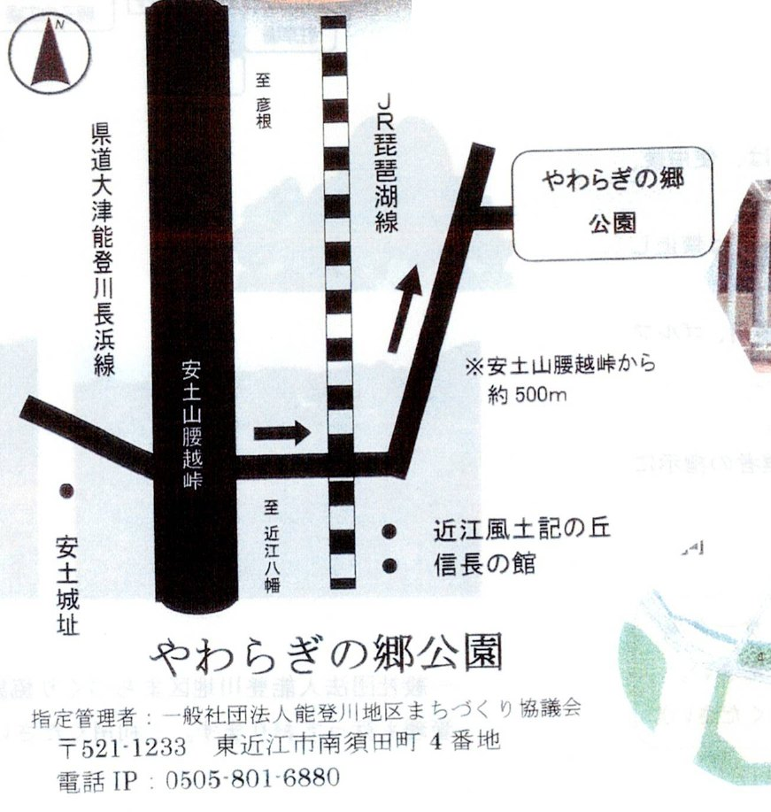
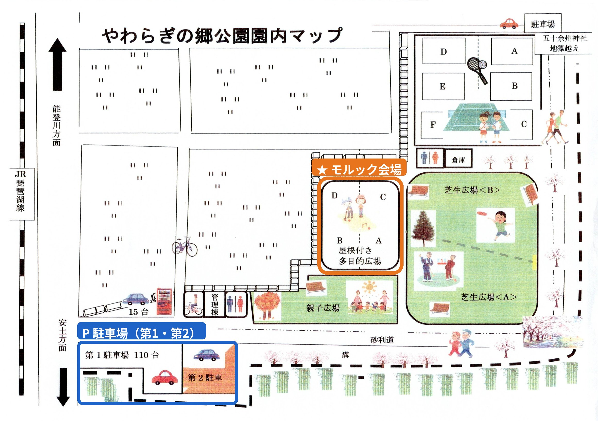
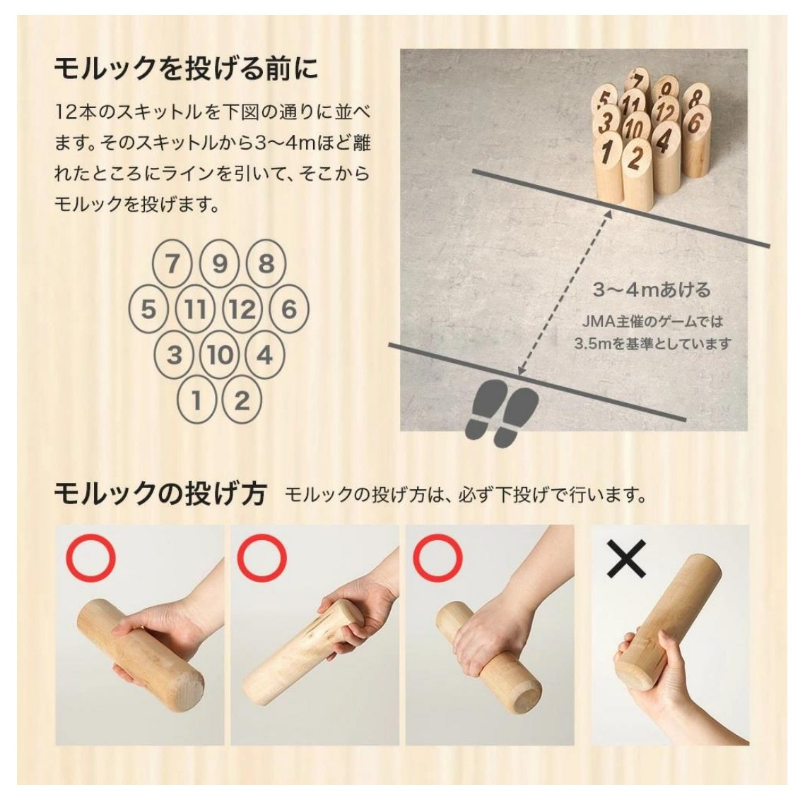
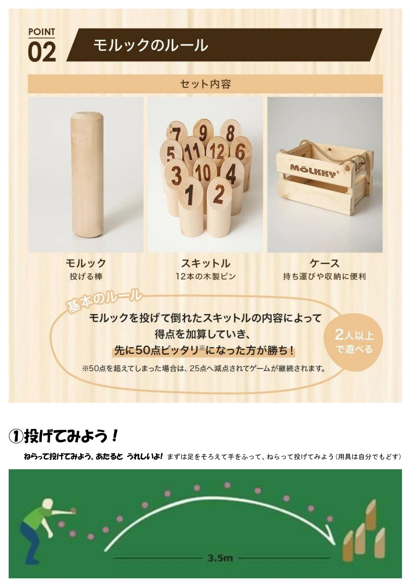
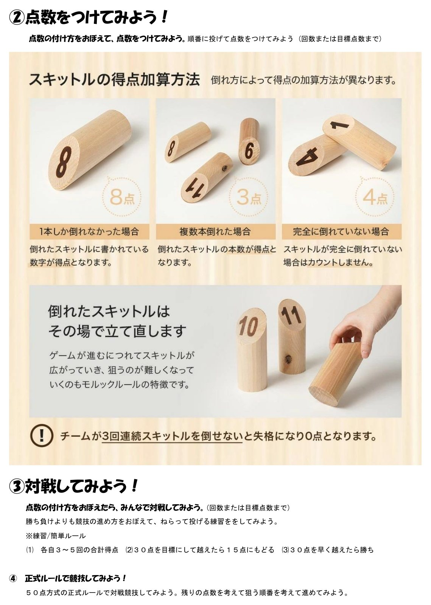
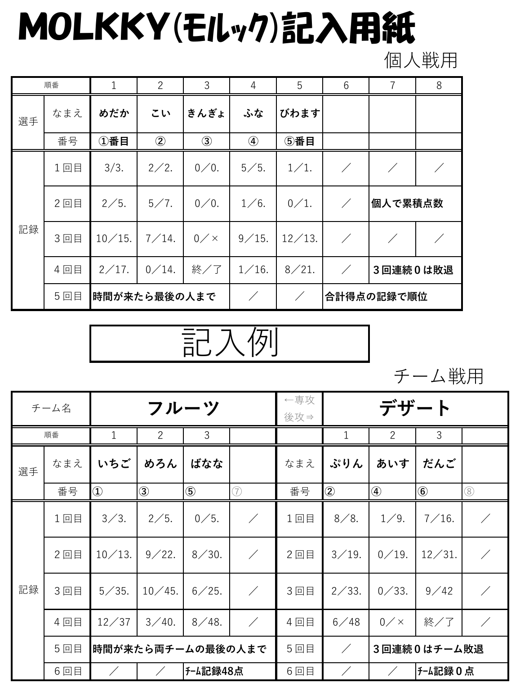
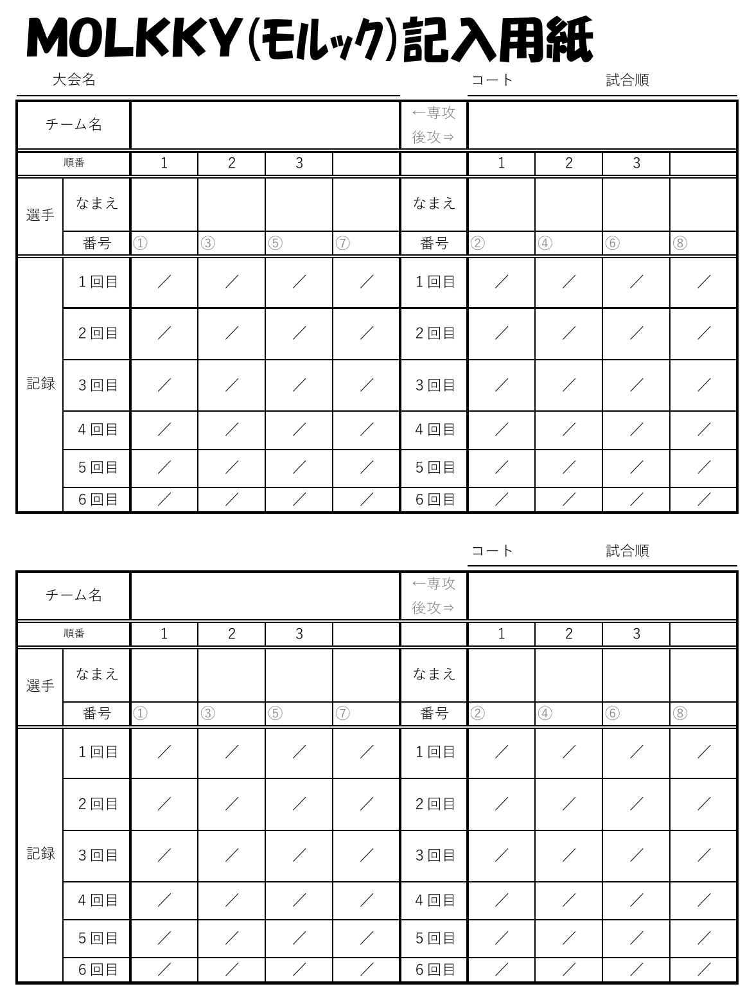
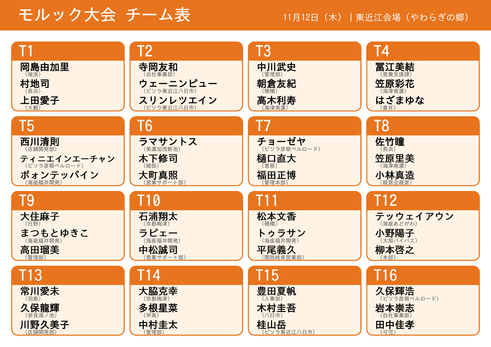
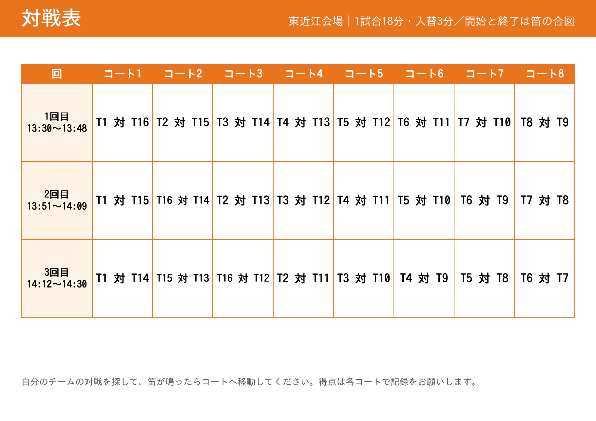
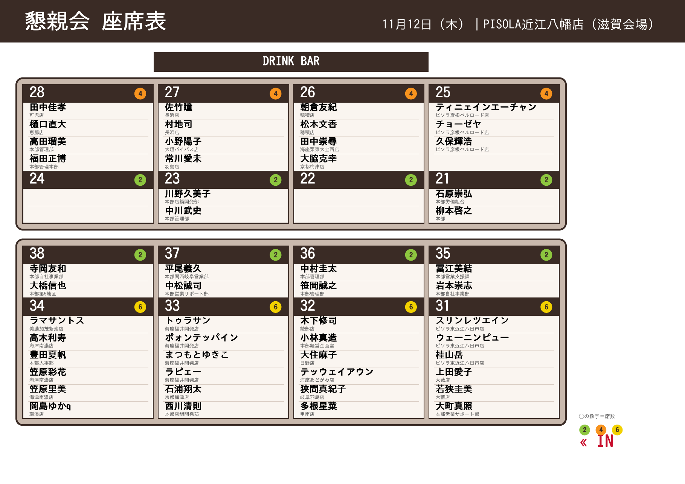

- ブックマーク（お気に入り）に追加：ブラウザの共有ボタン（iPhoneは下の「□に↑」、Androidは右上の「︙」）から
- ホーム画面に追加：同じメニューの「ホーム画面に追加」で、ワンタップで開けます
- 会場に掲示のQRコードを、もう一度読み取ってもOKです
ごあいさつ
会社と組合、職場や立場の垣根をこえて、笑顔で体を動かし、顔を合わせて語り合う一日にしたいと思っています。勝ち負けよりも、楽しむこと、そして声をかけ合うことを大切にしてください。
無理のない範囲で、けがのないよう、楽しくお過ごしください。
会場までの行き方
滋賀県東近江市南須田町4番地
受付 12:30／開会 13:00（時間に余裕をもってお越しください）
🚗 車でお越しの方
- 名神 八日市IC から 約35分
- JR能登川駅 から 約10分
道順（下の案内図の矢印のとおり）
- 県道大津能登川長浜線（北が彦根方面、南が近江八幡方面）を走り、「安土山腰越峠」付近へ。
- 峠のところから東へ（図の横向きの矢印）、JR琵琶湖線の線路を越えます。
- 線路を越えたら北東へ（図の斜めの矢印）。峠から約500mで「やわらぎの郷公園」です。
※公園へは、図の矢印の方向から進入してください（施設の案内より）。
🔍 拡大／縮小周辺の案内図

🅿 駐車場
園内の第1駐車場（110台）・第2駐車場などを使います（合計約120台）。台数に限りがあるため、できるだけ乗り合わせでお越しください。
🔍 拡大／縮小園内マップ（★オレンジ＝モルック会場、青＝駐車場）

画像は指でスクロールすると全体が見られます。「拡大／縮小」で大きさを変えられます。
※案内図は施設のパンフレットを元にした略図です。トイレは園内マップの管理棟のそばなどにあります。
モルックのかんたんルール
2人以上または2チーム以上で対戦して、先に50点ちょうどになったチームが勝ちです。道具も持ち運びができ、シンプルなルールで誰もができるようなスポーツです。チームの人数は2〜人が一般的です。人数が多ければ3チーム以上でもできます。
家族や友人とワイワイ楽しんだり、バーベキューやビールを飲みながらゆる〜くもできるし（フィンランドではそんな感じで楽しむことも多いとか）、スポーツとして勝ち負けにこだわってもよいです。シンプルながら奥深いスポーツです。
ピン（スキットル）を立てたり拾ったりする動作は筋肉を使い、投げるときは集中力を使い、点数計算は脳を使うので健康にもよいです。公園などでぜひ遊んでみてください。子供から高齢者まで楽しめます。
🔍 拡大／縮小📄 PDFで開く


画像は指でスクロールすると全体が見られます。「拡大／縮小」で大きさを変えられます。
📝 記入用紙の書き方
得点は、記入用紙に「その回の得点／累積点」の形で書いていきます（例：3／3、2／5、10／15）。3回連続で0点（ミス）になると失格です（×で記入）。時間が来たら、最後の人まで投げて終了です。下の「記入例」を見ながら書いてみてください。
🔍 拡大／縮小📄 記入例＋記入用紙（PDF）記入例（個人戦用・チーム戦用）

記入用紙（チーム戦用）

※当日の細かなルールや進め方は、司会がご案内します。
チーム表
チーム表（全16チーム＋対戦表）
お名前でチームを探す
チーム表（画像）
🔍 拡大／縮小チーム表（1/2）

対戦表（2/2）

画像は指でスクロールすると全体が見られます。「拡大／縮小」で大きさを変えられます。
懇親会の座席表
会場：PISOLA近江八幡店（滋賀会場） ※お席は卓番号でご案内します。
お名前で探す
座席表（全体）
🔍 拡大／縮小
席はスタッフがご案内します。お席のご都合・体調などは、お近くのスタッフへお知らせください。
アンケート
今後のイベントの参考にしますので、2〜3分ほどでご協力ください。回答は個人が特定されない形で集計します。
回答期限：11月15日（日）
アンケートに答える（準備中）🎁 ベネフィットステーションのアカウントがまだの方へ（組合員）
今回のお礼として、カフェポイントを500円分付与します。アカウントがまだの方だけ、初回登録をお願いします（登録済みの方は不要です）。
団体ID：C1001217S
承認キー1：社員番号（6桁）
承認キー2：生年月日（8桁 例：19900101）
① ログイン画面を開く ② 上の情報を入力 ③ 画面の案内に沿って登録（パスワードやSMSのコードは自分で管理）
☕ カフェポイントの使い方
500円分は、ご自身の好きなものに使えます。
例：スターバックスのドリンク／コンビニのコーヒーやスイーツ／ドーナツ・アイス・パン／ランチのプラス1品 など、500円で楽しめるものがおすすめです。
- ベネフィットステーションにログインし、右上の「メニュー」をタップ
- 「カフェ」をタップ
- 右上の3本線をタップ → 「メニュー一覧（ポイント申請）」をタップ
- 使いたいメニュー（例：【CB】グルメ補助）の「申請」をタップ
- 利用年月日と利用金額を入力し、「申請可能上限まで使用する」にチェック
- 領収書の画像をアップロード（写真ライブラリ／写真を撮る／ファイルを選択）
- 連絡先（メールアドレスなど）を入力 → 「内容確認」で申請完了
お店などを利用したあとに、領収書を添えて申請します。わからないときは、スタッフにお声がけください。
おわりに
皆さまのご協力のおかげで、たくさんの笑顔と交流が生まれました。いただいたご意見は、今後の活動に活かしてまいります。
お気をつけてお帰りください。